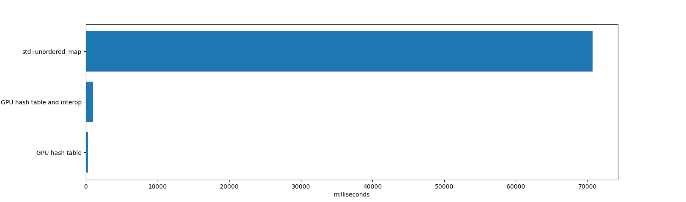

I released a new project A Simple GPU Hash Table on Github.
It is a simple GPU hash table capable of hundreds of millions of insertions per second. On my laptop’s NVIDIA GTX 1060, the code inserts 64 million randomly generated key/values in about 210 milliseconds, and deletes 32 million of those key/value pairs in about 64 milliseconds.
That’s a rate of around 300 million insertions/second and 500 million deletions/second on a laptop.
It’s written in CUDA, although the same technique is just as applicable to HLSL or GLSL.
The hash table implementation has a few constraints that make it work well on a GPU:
- Only 32 bit keys and 32 bit values
- The hash table is a fixed size
- The hash table size must be a power of two
An empty sentinel must be reserved for both keys and values (0xffffffff in the example code).
Lock Free Hash Table
The hash table uses open addressing with linear probing, so it’s just an array of keys/values in memory, and has excellent cache performance. This is in contrast to chaining, which involves pointer chasing through a linked list. The hash table is a simple array of KeyValue items:
struct KeyValue
{
uint32_t key;
uint32_t value;
};
The table uses power-of-two sizes instead of prime numbers because pow2/AND masking is a fast single instruction and the modulo operator is much slower. This is important for linear probing, because as the table is linearly searched, the slot index must be wrapped at each slot. The cost of a modulo operation at each slot quickly adds up.
The table stores only a key and a value for each item, not the hash of the key. Because the table stores 32-bit keys, computing the hash is fairly quick. The example code uses a Murmur3 hash which is only a few shifts, XORs, and multiplies.
The hash table uses a lock free technique that does not depend on any memory ordering. Even if some writes are out of order with other writes, the hash table is still in a valid state. This will be explained more below. This technique works very well for GPU’s, which can have thousands of threads running concurrently.
Both the keys and values of the hash table are initialized to empty.
The code can be modified to use 64 bit keys and/or 64 bit values. Keys require atomic reads, writes, and compare-and-swap operations, and values require atomic read and writes operations. Fortunately CUDA reads/writes of 32 and 64 bit values are atomic as long as they are naturally aligned (see here), and 64 bit atomic compare-and-swap exist on modern GPU’s. There is of course some performance cost to using 64 bit key/values.
Hash Table State
When thinking about the hash table, consider that there are four possible states that each key/value can be in:
- Both key and value are empty. This is how the hash table is initialized.
- The key has been written, but the value has not yet been written. If another thread reads data at this point, then it will return the value of empty (which is fine; it’s the same result as if the other thread had ran slightly earlier, and this is a concurrent data structure).
- Both the key and value have been written.
- The value is visible to other threads, but the key is not yet visible. This might happen because the CUDA programming model assumes a weakly ordered memory model. This is fine, in any event— the key is still empty, even though the value is not.
A subtle but important point is that once a key has been written to a slot, it never moves (even when the key is deleted, as discussed below).
The hash table code works even with weakly ordered memory models, where the order of memory reads and writes is unknown. As we look at the code below for hash table insertion, lookups, and deletion, keep in mind that each key/value is in one of these four states.
Hash Table Insertion
The CUDA function that inserts key/value pairs into the hash table looks like this:
void gpu_hashtable_insert(KeyValue* hashtable, uint32_t key, uint32_t value)
{
uint32_t slot = hash(key);
while (true)
{
uint32_t prev = atomicCAS(&hashtable[slot].key, kEmpty, key);
if (prev == kEmpty || prev == key)
{
hashtable[slot].value = value;
break;
}
slot = (slot + 1) & (kHashTableCapacity-1);
}
}
To insert a key, the code iterates through the hash table array starting at the insertion key’s hash. At each hash table array slot, it does an atomic compare-and-swap, which compares the key at that slot to empty, updates the slot’s key with the insertion key if it matches, and returns the slot’s original key. If that slot’s original key was empty or matches the insertion key, then the code found the correct slot for the insertion key, and sets the slot’s value to the insertion value.
If there are many items with the same key in a single kernel invocation of gpu_hashtable_insert(), then any of those values may be written to the key’s slot. This is still correct; one of the key/value writes in the invocation will succeed, but because all of this is happening in parallel across many threads, it is impossible to know which will be the last to write to memory.
Hash Table Lookups
The code to find keys:
uint32_t gpu_hashtable_lookup(KeyValue* hashtable, uint32_t key)
{
uint32_t slot = hash(key);
while (true)
{
if (hashtable[slot].key == key)
{
return hashtable[slot].value;
}
if (hashtable[slot].key == kEmpty)
{
return kEmpty;
}
slot = (slot + 1) & (kHashTableCapacity - 1);
}
}
To find the value of a key stored in the hash table, we iterate through the hash table array starting at the lookup key’s hash. At each slot, we test if the key is the one we’re looking for, and if so we return its value. We also test if the key is empty, and terminate the search if so.
If the lookup fails to find the key, then it returns a value of empty.
These lookups can concurrently happen with inserts and deletes. A thread will see each key/value in the table in one of the four states described above.
Hash Table Deletion
The code to delete keys:
void gpu_hashtable_delete(KeyValue* hashtable, uint32_t key, uint32_t value)
{
uint32_t slot = hash(key);
while (true)
{
if (hashtable[slot].key == key)
{
hashtable[slot].value = kEmpty;
return;
}
if (hashtable[slot].key == kEmpty)
{
return;
}
slot = (slot + 1) & (kHashTableCapacity - 1);
}
}
Deleting a key involves something unexpected: we leave the key in the table and mark its value (not the key) as empty. This code is very similar to lookup(), except that if it finds a matching key in the table, it sets its value to empty.
As mentioned earlier, once a key has been written to a slot, it never moves. Even when an item is deleted from the table, the key remains but its value is empty. This means there’s no need to use an atomic operation to write to the slot’s value, because it doesn’t matter if the current value is non-empty or empty— the slot’s value will be updated to empty either way.
Hash Table Resizing
Resizing the hash table can be performed by creating a new table of larger size and inserting all non-empty elements of the old table into the new table. I didn’t implement that, as the example code is intended to be simple. Furthermore, this example is in CUDA, and memory allocations in CUDA programs are often done by the host code, not within a CUDA kernel.
Alternatively, A Lock-Free Wait-Free Hash Table describes how to resize this lock free data structure.
Concurrency
In the code snippets above, gpu_hashtable_insert()/_lookup()/_delete() process one key/value at a time. In the example code, though, gpu_hashtable_insert()/_lookup()/_delete() process an array of key/value pairs in parallel, where each key/value is processed by one GPU thread:
// CPU code to invoke the CUDA kernel on the GPU
uint32_t threadblocksize = 1024;
uint32_t gridsize = (numkvs + threadblocksize - 1) / threadblocksize;
gpu_hashtable_insert_kernel<<<gridsize, threadblocksize>>>(hashtable, kvs, numkvs);
// GPU code to process numkvs key/values in parallel
void gpu_hashtable_insert_kernel(KeyValue* hashtable, const KeyValue* kvs, unsigned int numkvs)
{
unsigned int threadid = blockIdx.x*blockDim.x + threadIdx.x;
if (threadid < numkvs)
{
gpu_hashtable_insert(hashtable, kvs[threadid].key, kvs[threadid].value);
}
}
The lock free hash table supports concurrent inserts, lookups, and deletes. Because the hash table key/values are always in one of four states, and keys don’t move around, the hash table guarantees correctness even when mixing different kinds of operations.
However, when processing a batch of inserts/deletes in parallel in a kernel, and a kernel’s input array of key/values contains duplicate keys, then it’s unpredictable which of those key/values will “win” and be the last one written to the hash table. For example, imagine that an insertion kernel is called with an input array of key/values is A/0 B/1 A/2 C/3 A/4. When the kernel finishes, the key/values B/1 and C/3 are guaranteed to be in the table, but any one of A/0, A/2, or A/4 will be in the table. Depending on the application, this may or may not be an issue— it might be known that the input array has no duplicate keys, or it might not matter which value is the last to be written.
If this is an issue for an application, then it needs to separate the duplicate key/values into different CUDA kernel calls. In CUDA, all operations within a kernel invocation always finish before the next kernel invocation (at least, within a single stream; kernels in different streams execute in parallel). In the above example, if one kernel is called with A/0 B/1 A/2 C/3, and then another kernel is called with A/4, then the key A will have the value 4.
Another consideration is whether the lookup() and delete() functions should use a plain or volatile pointer to the hash table key/value array. The CUDA documentation for volatile states that “The compiler is free to optimize reads and writes to global or shared memory … These optimizations can be disabled using the volatile keyword: … any reference to this variable compiles to an actual memory read or write instruction.” Using volatile is not necessary for correctness; if a thread uses a cached value from an earlier read, it will be using slightly out of date information, but it will still be using information from a valid state of the hash table at some point in that kernel’s invocation. If an application wants to be sure to use the most up to date information, then it can use a volatile pointer, but there is a slight performance hit (in my tests, deleting 32 million elements went from 500 million deletes / second to 450 Mdeletes/sec).
Performance
In a test that inserts 64 million items and deletes 32 million of them, there’s no contest between std::unordered_map and the GPU hash table:

The std::unordered_map took 70691 milliseconds to insert and delete the items, and then freeing the unordered_map (freeing an unordered_map with millions of items consumes a significant amount of time because unordered_map does many memory allocations internally). To be fair, std:unordered_map is operating on a very different set of constraints. It is a single CPU thread, it supports key/values of any size, and it works well with high load factors and has steady performance after many deletions.
The GPU hash table and interop time took 984 milliseconds. That includes time for allocating and deleting the hash table (which is a single memory allocation of 1 GB, which takes some time in CUDA), inserting and deleting the items, and iterating through all items. Also included are all memory copies to/from the GPU.
The GPU hash table took 271 milliseconds. That includes just the GPU time to insert and delete the items, and not the time for memory copies or iterating over the resulting table. If the GPU table is long lived, or the hash table exists entirely on the GPU (for example, to build a hash table on the GPU that is used by other GPU code, not the CPU), then this is the relevant time.
The GPU hash table achieves high performance thanks to the large bandwidth and massive parallelism of GPU’s.
Drawbacks
There are a couple of issues with this hash table design that should be kept in mind:
- Linear probing suffers from clustering, so that keys are often very far from their ideal slots in the table
- Keys are not removed from the table by the delete function, and clutter the table over time
As a result, performance of the hash table can degrade over time, especially with long-lived hash tables that have had many inserts and deletes. One way to mitigate these issues is to rehash the table into a new table with a sufficiently low load factor and filtering out deleted keys during the rehash.
To illustrate these issues, I used the hash table example code to create a hash table with a capacity of 128 million elements, and inserted 4 million elements into the table in a loop until the table had 124 million elements (a load factor around 0.96). Here’s the timing of the kernel that inserted 4 million elements; every row is a CUDA kernel call that inserts 4 million new items into the same hash table:
| Load factor | Time to insert 4194304 items |
|---|---|
| 0.00 | 11.608448 ms (361.314798 million keys/second) |
| 0.03 | 11.751424 ms (356.918799 million keys/second) |
| 0.06 | 11.942592 ms (351.205515 million keys/second) |
| 0.09 | 12.081120 ms (347.178429 million keys/second) |
| 0.12 | 12.242560 ms (342.600233 million keys/second) |
| 0.16 | 12.396448 ms (338.347235 million keys/second) |
| 0.19 | 12.533024 ms (334.660176 million keys/second) |
| 0.22 | 12.703328 ms (330.173626 million keys/second) |
| 0.25 | 12.884512 ms (325.530693 million keys/second) |
| 0.28 | 13.033472 ms (321.810182 million keys/second) |
| 0.31 | 13.239296 ms (316.807174 million keys/second) |
| 0.34 | 13.392448 ms (313.184256 million keys/second) |
| 0.37 | 13.624000 ms (307.861434 million keys/second) |
| 0.41 | 13.875520 ms (302.280855 million keys/second) |
| 0.44 | 14.126528 ms (296.909756 million keys/second) |
| 0.47 | 14.399328 ms (291.284699 million keys/second) |
| 0.50 | 14.690304 ms (285.515123 million keys/second) |
| 0.53 | 15.039136 ms (278.892623 million keys/second) |
| 0.56 | 15.478656 ms (270.973402 million keys/second) |
| 0.59 | 15.985664 ms (262.379092 million keys/second) |
| 0.62 | 16.668673 ms (251.627968 million keys/second) |
| 0.66 | 17.587200 ms (238.486174 million keys/second) |
| 0.69 | 18.690048 ms (224.413765 million keys/second) |
| 0.72 | 20.278816 ms (206.831789 million keys/second) |
| 0.75 | 22.545408 ms (186.038058 million keys/second) |
| 0.78 | 26.053312 ms (160.989275 million keys/second) |
| 0.81 | 31.895008 ms (131.503463 million keys/second) |
| 0.84 | 42.103294 ms (99.619378 million keys/second) |
| 0.87 | 61.849056 ms (67.815164 million keys/second) |
| 0.90 | 105.695999 ms (39.682713 million keys/second) |
| 0.94 | 240.204636 ms (17.461378 million keys/second) |
Clearly, performance degrades as the load factor increases. This is not a desirable property of a hash table for most applications. If the application is inserting items into a hash table and then throwing it away (for example, to count the words in a book), this might not be a problem. But if the application has a long-lived hash table (for example, an image editing application that stores the non-empty parts of the image in a table, and where the user causes many inserts and deletes in the table), this could be a real issue.
I measured the probe lengths of the hash table after 64 million inserts (so at a load factor of 0.50). The average probe length was 0.4774, so most keys were either in their best slot or just one slot away. The maximum probe length was 60.
I then measured the probe lengths of the table after 124 million inserts (a load factor of 0.97), and found that the average probe length was 10.1757, and the maximum probe length was 6474 (!!). Linear probing’s performance is not great with high load factors.
The best way to use this hash table is to keep load factors low. However, that trades off memory for performance. Fortunately, with 32 bit keys and values, that might be a reasonable choice for an application. In the example above, if we wanted a load factor of 0.25 with a hash table capacity of 128 million items, then we could insert no more than 32 million items, wasting the other 96 million items— times 8 bytes for each key/value, that’s 768 MB of wasted space.
Note that this is wasted space in GPU VRAM, which is a more precious commodity than the system memory. While most modern desktop GPU’s running CUDA have at least 4 GB of VRAM (and at the time of writing, an NVIDIA 2080 Ti has 11 GB), it’s still not ideal to waste so much memory.
I will be writing more about other ways to build GPU hash tables that do not suffer long probe lengths like linear probing and ways to reuse deleted slots in the table.
Measuring Probe Length
To determine the probe length of a key, we can subtract the key’s hash (its ideal index in the table) from the key’s actual index in the table:
// get_key_index() -> index of key in hash table
uint32_t probelength = (get_key_index(key) - hash(key)) & (hashtablecapacity-1);
Because of the magic of two’s complement numbers, and the fact that the hash table capacity is a power-of-two, this works even when the key’s index has wrapped around the beginning of the table. Consider a key that hashes to 1 but has been inserted at slot 3; then for a hash table of capacity 4, we have (3 - 1) & 3, which equals 2.
Conclusion
Contact me at Nosferalatu on Twitter or open a new issue at the example code’s Github repo with any questions or comments.
This code is based on the excellent work at:
In the future, I will be writing more about GPU hash table implementations and analyzing their performance. I’ve been looking at chaining, Robin Hood hashing, and cuckoo hashing using atomic operations for GPU-friendly data structures.